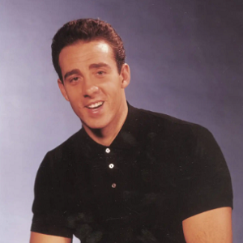

What our customers say
Sara May
@sara_may
I just tried out @chirp and it's amazing, love all the analytics I can see

Jack Scott
@jackscott_
I initially started using Chirp to support the co-founder as I personally knew him, but after haiving tried it out for a few weeks, I can genuinely say this changed my Twitter game.

Jessica May
@jmay98
Absolutely love everything about Chirp, from the design to how everything wrks smoothly.